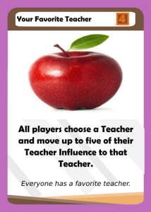
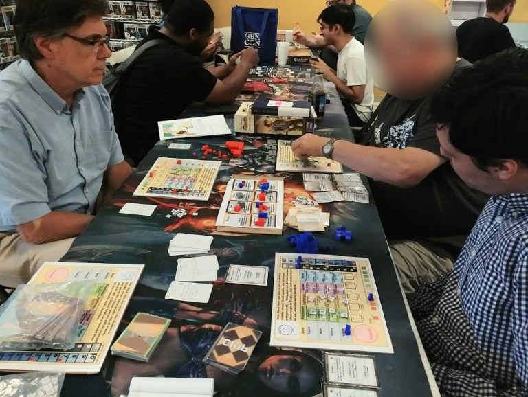

Adjusting Cards (part one)
July 20, 2018
Hey everyone! I thought that I would make a series of posts on cards had to be adjusted after play testing, mostly due to balancing issues. The purpose is to showcase more of the process that goes behind the game design of Dagers High. Today, I want to look at three cards that were changed after a recent playtest.


The original card is shown on the left. This card led to someone having a large advantage since they were able to pull a club that would normally cost 8 Friends, and then have an additional 3 actions on top of an immediate effect giving them Stats. While I am not opposed to strong cards, especially ones that require chance, it seemed to be a little bit too strong. Thus, the effect was changed to not give the immediate effect of the club. This makes the card a little bit more balanced since it makes it more difficult to gain a club and also have a monster turn. It also adds a small risk to the player who plays it: inthe case of clubs with negative yearly effects, it could hurt to miss out on the immediate bonus!
I ended up not liking this card as much as I thought I would since it led to several players having massive piles of Teacher Influence that were effectively useless. One person had over 30 Teacher Influence in a single teacher! I think that while it does help people gain recs, it also ruins long term strategical planning. That wasn’t very fun for the group, and so the effect was changed to create more room for strategy. Also note the higher sleep point value of the card: now that this card helps every player rather than hurting them, the sleep point value was bumped to 4 to compensate. In addition, Junior Year cards have a higher point value on average on purpose given the larger stat sinks of the FUN as well as more difficult classes. I actually feel that a lot of the Junior Year cards could increase in point value, so I have no problems bumping this card to 4 SP.


Cap on Extracurriculars is only good for people who are behind, which is why it seemed on the surface to not be problematic. However, it also prevents a very valid strategy of pursuing clubs and I found it to over-penalize this strategy. I don’t think a single card should be as powerful as it was: in the playtest, a player who owned no clubs forced another player to discard 4 of his clubs! This is a significant amount of RP that rewards players who didn’t lead any clubs, which also seems contradictory. Thus, this nerf prevents this large swing from occurring. It also could potentially allow someone to discard clubs that are worth negative RP, making playing this card a more interesting decision! To account for the fact that the effect was nerfed, the SP value of the card was increased to 4.
Here is a photo of the playtest. One of the players decided after taking the photo that they did not want to be featured, and so I have blurred their face:
Were these changes fair and justified? Let me know what you think in the comments below! Also, you can now subscribe by using the purple widget to the right of your screen!